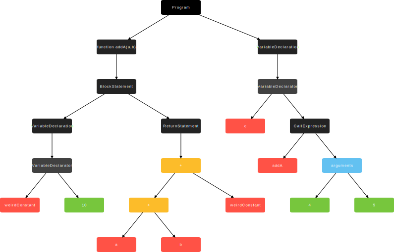

Javascript
the darker side of the engine
Kemal Erdem | github.com/burnpiro
JS is a strange language
Many implementations
Multiple platforms
Compiled or Interpreted?
It depends...
Main flow in JS Engine
AST (Abstract Syntax Tree)
function addA(a,b) {
const weirdConstant = 10
return a + b + weirdConstant
}
const c = addA(4,5)

forEach polyfill in JS

forEach polyfill in JS
Array.prototype.forEach = function (callback, thisArg) {
var T, k
if (this == null) {
throw new TypeError(' this is null or not defined')
}
var O = Object(this)
var len = O.length >>> 0
if (typeof callback !== 'function') {
throw new TypeError(callback + ' is not a function')
}
if (arguments.length > 1) {
T = thisArg
}
k = 0
while (k < len) {
var kValue
if (k in O) {
kValue = O[k]
callback.call(T, kValue, k, O)
}
k++
}
}
Interpreter
Fast and generate bytecode
Optimizing Compilers
Used only for "HOT" functions
Before dinosaurs => 2008

2010 - First optimizing compiler
2014 - Lets add more of them?

Era of optimizing compilers
Crankshaft and full codegen
Other engines follow using even more than 2 compilers per engine
2016 - Interpreter idea
Do you see, Harry? Do you see the flaw in my brilliant plan now?
The flaw?

2017 - Back to the future